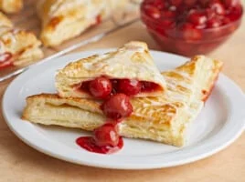

CHERRY TURNOVERS

Description
Cherry Turnovers are a popular baked dessert made of flaky puff pastry dough filled with sweet and tart Cherry Sauce. Though they’re a fantastic end-of-dinner delight, they can also be enjoyed for breakfast.
Ingredients
- Cherry Filling
- Puff Pastry Sheets
- Egg
- Powdered Sugar
- Milk
Steps
- Cover a baking sheet with parchment paper, preheat the oven to 400°F with an oven rack in the center, and gently roll thawed puff pastry sheets into 12-inch squares, then cut and arrange them on the baking sheet.
- Add 1/4 cup of cherry pie filling to the center-left of each square, leaving a 1-inch border around the edges to avoid overfilling and difficulty in sealing the turnovers.
- Fold the bottom right corner of the dough over the filling and press it into the top left corner to create a triangle.
- Apply a thin layer of beaten egg on each puff pastry turnover, bake at 400°F for 10 minutes, rotate the pan, and bake for an extra 10 to 15 minutes until the pastry is golden brown and risen.
- After cooling the pastries, create a thick glaze by mixing 1 tablespoon of milk with 1/2 cup of powdered sugar, then drizzle it over the turnovers using a fork for defined lines or a spoon for globs.